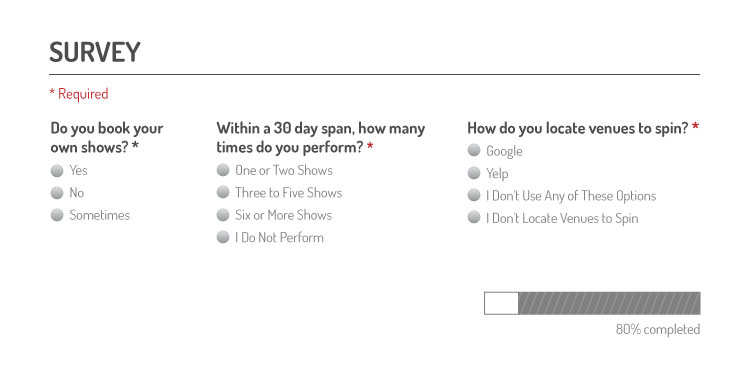
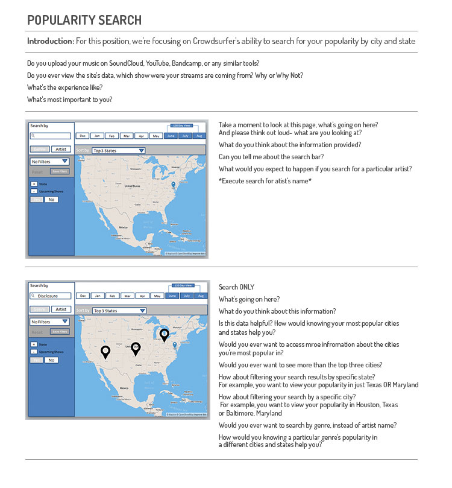
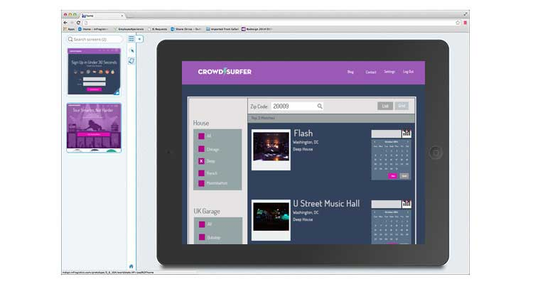

Electronic artists are mostly independent DJ’s who struggle to find venues specializing in their sound, often playing for uninterested crowds. Touring serves as the best option to monetize fan growth for up-and-coming acts, and indepedent artists struggle with booking their own shows

Led interaction design, survey and usability script tasks

Managed styling and layout responsibilities, while ensuring consistent look and feel across all UI components

Transferred PSDs into HTML5 and CSS3 with Bootstrap and BEM naming conventions, while ensuring components were modular and reusable
Electronic independent artists want to play in front of packed audiences. Thus, the beta version focused on understanding their tour booking journey; finding venues that play their genre, identifing openings in show calendars, and building relationships with venues to book shows
The team partnered with several local DJ's to collect survey data on our target audience. The user feedback helped identify key tasks and prioritize goals, within the show booking process, which informed interaction design and usability testing decisions
After crafting designs based off survey data, we validated the designs’ learnability, utility, and desirability to uncover overextended metaphors and incorrectly placed information. During this phase, we discovered clunky interactions and tasks requiring too many clicks
As designs moved from PowerPoint images to Photoshop files, we tested again to detect flawed interactions before developing the front-end code. During this phase, we were able to detect and remove designs with deep development scope
